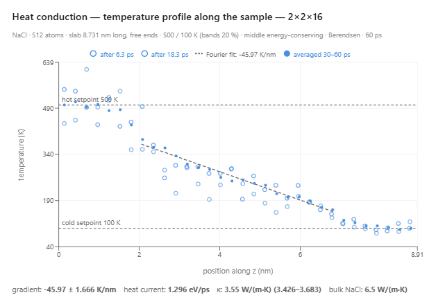
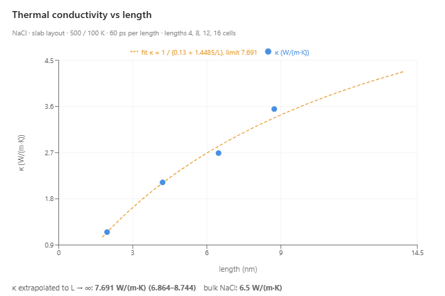
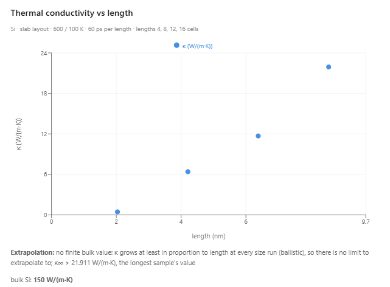

Measure Heat Conduction with AI-Assisted Simulations
The thermal conductivity of salt and silicon, measured atom by atom in experiments run by an AI agent.
Heat flows from a hot place to a cold one. Fourier's law states how fast: the heat current through a material is proportional to the temperature gradient, the change of temperature per unit length. The constant of proportionality is the thermal conductivity, written κ and measured in watts per meter per kelvin. Copper conducts about 400 W/(m·K), silicon about 150, and table salt about 6.5. In an electrical insulator such as salt, heat is carried by phonons, the quantized vibrations of the crystal lattice. A phonon travels some distance before it scatters off another phonon or a defect. That distance is the phonon mean free path, and it sets the conductivity of the crystal.
In AIMS, students measure thermal conductivity by talking to an AI agent. They describe the experiment in plain language, and the agent loads a crystal into a molecular dynamics simulation, holds its two ends at different temperatures, charts the temperature along the crystal, and computes κ from the measured gradient and heat current. The window below shows the example on sodium chloride. Press Play to run the experiment: the bottom of the slab is held at 500 K and the top at 100 K, and each ion is colored by its kinetic energy, red for fast and blue for slow.
A Crystal Between a Hot Bath and a Cold Bath
The experiment is the one a materials laboratory performs on a bar of metal: heat one end, cool the other, and measure the temperature along the bar and the power that flows through it. In the simulation, the crystal is a slab with free surfaces at both ends. Two thermostats act as the heat baths. One acts on the atoms in the bottom fifth of the slab and holds that band at the hot temperature, and the other holds the band in the top fifth at the cold temperature. The atoms between the two bands have no thermostat, so their energy changes only by the heat that flows in from the hot band and out to the cold band.
The simulation divides the slab into thin layers and records the temperature of each layer as the run goes on. After the first ten or twenty picoseconds, the profile stops drifting: the heat entering from the hot bath equals the heat leaving through the cold bath. The agent averages the profile over the second half of the run and fits a straight line to the layers between the two bands, leaving out the layer next to each band. The slope of that line is the temperature gradient. The heat current is the energy the hot thermostat adds per unit time, averaged with the energy the cold thermostat removes. Fourier's law then gives the conductivity: κ equals the heat current divided by the cross-sectional area of the slab and by the gradient.
The first run of the salt example uses a slab of 256 ions, 4.2 nm long and 1.27 nm2 in cross-section, held at 500 K and 100 K for 30 picoseconds. The interior gradient is 72 ± 4 K/nm, and the heat current through the slab is 209 nanowatts. Together these give κ = 2.3 W/(m·K), with a range of 2.2 to 2.4 from the scatter of the layer temperatures. The value is about a third of the handbook value of 6.5 W/(m·K).
You can run the whole investigation yourself. Start a new Crystal Builder project, open the chat, and type these prompts in order. Each experiment returns a chart of the temperature profile in the chat.
Salt
- Run one experiment — "Load sodium chloride into the lab as a 2x2x8 supercell. Then hold the bottom of the slab at 500 K and the top at 100 K and measure how heat conducts through it."
- Ask about the result — "Why is the conductivity still below the handbook value?"
- Vary the length — "Now run the same slab experiment at 4, 8, 12 and 16 cells, 60 ps each, and extrapolate the conductivity to the bulk value."
Silicon
- Run one experiment — "Load silicon into the lab as a 2x2x8 supercell. Then hold the bottom of the slab at 600 K and the top at 100 K and show me how heat conducts through it."
- Ask about the result — "Why does the temperature drop so sharply at the edges of the two thermostatted bands, and why is the conductivity so far below bulk silicon?"
- Vary the length — "Now run the same slab experiment at 4, 8, 12 and 16 cells, 60 ps each, and extrapolate the conductivity to the bulk value."
The first experiment takes about ten minutes, and the series of four lengths takes one to two hours. The lab keeps the two thermostats set after each run, so you can press Play and watch the experiment, or change the bath temperatures and run it again.
Temperature Jumps at the Bands
The temperature profile is a straight line across the middle of the slab, as Fourier's law predicts, and it jumps at the two edges where the thermostatted bands meet the rest of the crystal. In the first salt run, the interior accounts for about 181 K of the 400 K difference between the baths, and the two jumps account for the rest. In the silicon example described below, the interior accounts for only about 37 K of 500 K.
Each jump comes from a thermal contact resistance. The heat a thermostat supplies or removes must cross the inner edge of its band, where the band meets the rest of the crystal. The thermostat changes how the atoms in its band move, so phonons arriving at that edge are partly scattered back, and heat crosses the edge only with a temperature difference across it, as it does at the boundary between two different materials. The fit leaves the jumps out, so the measured gradient and the conductivity computed from it describe the interior of the slab.
From a Sample to a Material
The kinetic theory of phonons gives the conductivity as κ = C v ℓ/3, where C is the heat capacity per unit volume, v is the speed of the phonons, and ℓ is their mean free path. In a bulk crystal, ℓ is set by collisions between phonons and with defects. In a slab, a phonon also scatters when it reaches the hot or the cold band, so the distance it travels between collisions is limited by the slab length L. The two kinds of scattering add their rates (Matthiessen's rule), so the reciprocal of the mean free path is the bulk value plus a term proportional to 1/L. Because κ is proportional to ℓ, the measured conductivity follows the same form:
1/κ = 1/κ∞ + b/L,
where κ∞ is the conductivity of the bulk material and b is a constant. Plotted against 1/L, the reciprocal of the measured conductivity is a straight line, and its intercept at 1/L = 0, which corresponds to an infinitely long sample, is the reciprocal of the bulk conductivity. This extrapolation was introduced by Patrick Schelling, Simon Phillpot, and Pawel Keblinski in 2002. The straight line holds when the slab is at least comparable in length to the bulk mean free path. In a much shorter slab, most phonons cross from one band to the other without scattering, and the points fall off the line.
In the third turn of the salt example, the agent repeats the experiment on four slabs, 4, 8, 12, and 16 unit cells long, for 60 picoseconds each, and fits the line. The measured conductivity rises with length:
| Length (nm) | Ions | Gradient (K/nm) | κ (W/(m·K)) |
|---|---|---|---|
| 2.0 | 128 | 153 ± 10 | 1.15 |
| 4.2 | 256 | 76 ± 4 | 2.12 |
| 6.5 | 384 | 58 ± 2 | 2.69 |
| 8.7 | 512 | 46 ± 2 | 3.55 |
All four points lie within about 5 percent of one line, and its intercept gives a bulk conductivity of 7.7 W/(m·K), with a range of 6.9 to 8.7. The handbook value at room temperature is 6.5 W/(m·K). The 4.2 nm slab measured 2.29 W/(m·K) in the first run and 2.12 in this one, so two independent runs of the same slab agree within 8 percent. The agent draws the fitted line back on a chart of κ against length as a curve that rises toward the bulk value.


The extrapolated value is about 20 percent above the handbook value. Two features of the simulation can account for the difference. The interior of the longest slab runs from about 360 K at its hot end to about 170 K at its cold end and averages about 260 K, below room temperature. The conductivity of an insulating crystal is roughly inversely proportional to the absolute temperature, so an average of 260 K raises it by about 15 percent over its value at 300 K. The forces between the ions follow the rigid-ion potential of Mario Tosi and Fausto Fumi, which was fitted to the lattice energy and the lattice spacing of the alkali halides, and its phonons can differ from those of real salt.
Silicon: A Slab Shorter Than the Phonon Path
The extrapolation reaches a bulk value for salt because the slabs are comparable in length to the phonon mean free path. The kinetic formula with the handbook conductivity, heat capacity, and speed of sound of sodium chloride gives an average mean free path of a few nanometers. In silicon, the phonons that carry most of the heat travel hundreds of nanometers before they scatter. The second example runs the same experiment on silicon, with the forces given by the potential of Frank Stillinger and Thomas Weber, the baths at 600 K and 100 K, and the same four lengths.
| Length (nm) | Atoms | Gradient (K/nm) | κ (W/(m·K)) |
|---|---|---|---|
| 2.0 | 128 | 109 ± 18 | 0.44 |
| 4.2 | 256 | 22 ± 5 | 6.4 |
| 6.4 | 384 | 13 ± 2 | 11.7 |
| 8.6 | 512 | 8 ± 1 | 21.9 |

The conductivity of silicon more than triples while the length doubles from 4.2 to 8.6 nm. A conductivity that grows at least in proportion to the length is the signature of ballistic transport: most phonons cross the whole slab without scattering, and most of the temperature drop occurs at the two jumps. The line of 1/κ against 1/L then passes through the origin or below it, whichever lengths are kept, and the extrapolation yields no bulk value. The agent reports what the data support: the bulk conductivity of this model of silicon is larger than 21.9 W/(m·K), the value of the longest slab. Measuring the handbook value of 150 W/(m·K) by this method requires slabs hundreds of nanometers long, far more atoms than a simulation in a web browser can follow.
Silicon also shows how much a single run on a few hundred atoms varies. The 4.2 nm slab measured 12.2 W/(m·K) in the first run and 6.4 in the ladder of lengths. In salt, where the interior gradient is measured to within 4 to 7 percent, the same comparison agrees within 8 percent.
Why Use AI to Assist Scientific Simulations?
Each measurement in this article requires two thermostats set on two bands of atoms, a run long enough to reach a steady state, a temperature profile averaged over time, a straight-line fit that leaves out the contact layers, and a bookkeeping of the energy the baths add and remove. The extrapolation requires the whole experiment four times at four lengths. The AI agent carries out these steps for the student and reports each number with its uncertainty.
The investigation follows the questions the student asks. A student who wonders why the temperature jumps at the edges of the bands can ask, and the agent explains the contact resistance using the jumps in that student's own chart. A student who asks for a series of lengths gets four new experiments and a chart of the results. The chat log records each question and the run that answered it.
What the Simulations Produced
The simulations were given the forces among the atoms. Everything below came out of them:
- Fourier's law — the temperature falls linearly across the interior of a slab that carries a steady heat current.
- Contact resistance — the temperature jumps where each thermostatted band meets the rest of the crystal.
- A length-dependent conductivity — the measured conductivity of a slab a few nanometers long rises with its length.
- The conductivity of salt — 7.7 W/(m·K) extrapolated from four slabs, against a handbook value of 6.5.
- Ballistic phonons in silicon — the conductivity grows at least in proportion to the length, because most phonons cross the slab without scattering.
Conclusion
This article uses heat conduction to illustrate a new way to learn science: students converse with an AI agent that turns a plain-language question into a molecular dynamics experiment and hands back measured data. Fourier's law and the thermal conductivity listed in a handbook become something students measure for themselves, and the comparison of salt and silicon shows them when a measurement on a small sample describes the material. By pairing a physically grounded simulation with an AI that can set it up and run it, AIMS lets students trace the flow of heat to the vibrations of individual atoms and turns their curiosity into a genuine scientific investigation of how heat moves through solids.
← Back to AIMS